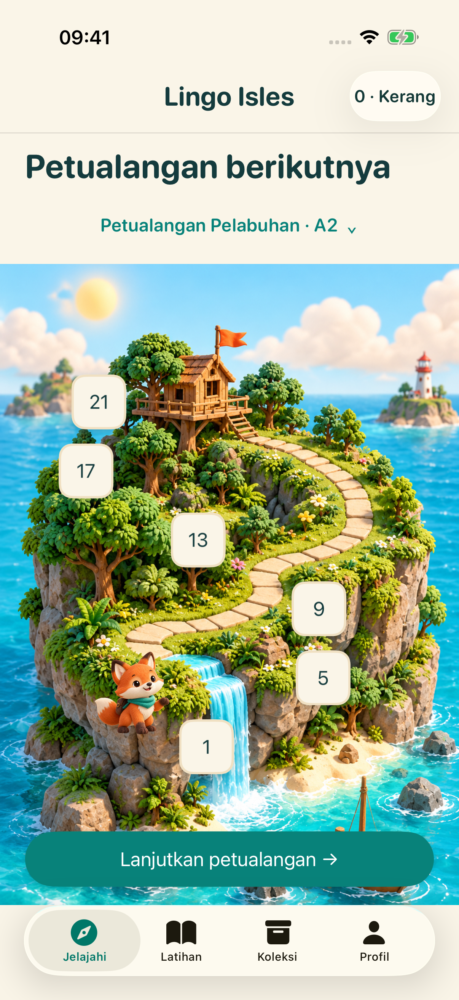
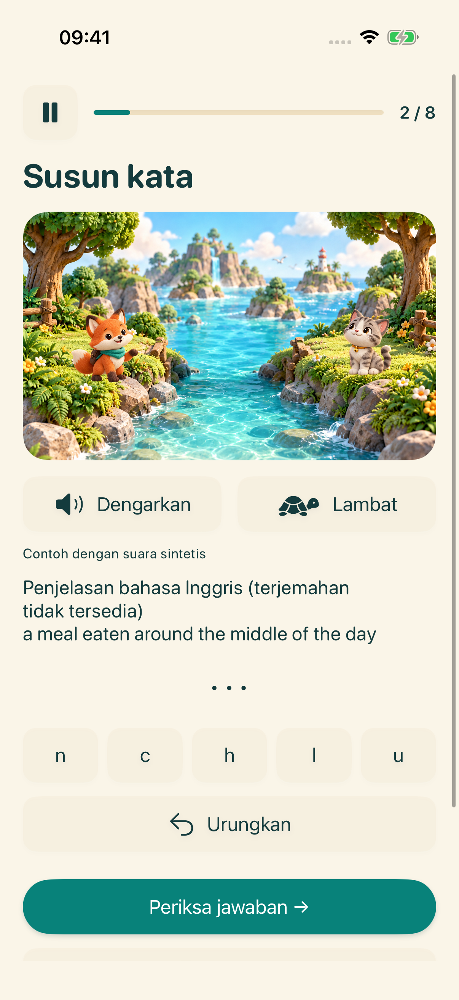
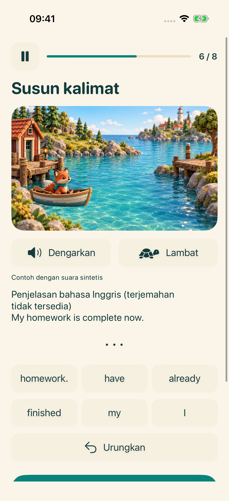
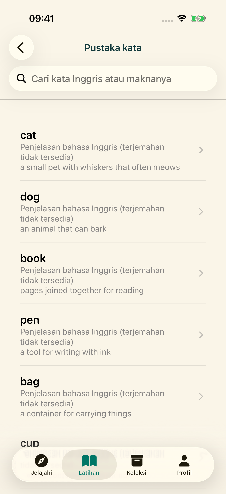

Pulau berikutnya menantimu
Pilih tahap belajarmu, lalu ikuti rangkaian latihan bahasa Inggris yang singkat.
Jelajahi empat pulau belajar. Dengarkan, bentuk kata, susun kalimat, dan coba gunakan suaramu — satu penemuan kecil setiap kali.
Jelajahi petualangannyaSedang bersiap hadir di iPhone dan iPad


Pilih tahap belajarmu, lalu ikuti rangkaian latihan bahasa Inggris yang singkat.

Dengarkan suara sistem dan susun huruf untuk berlatih ejaan bahasa Inggris.

Urutkan kata dan pelajari cara merangkai kalimat bahasa Inggris.

Jelajahi pustaka kata, simpan favorit, dan ulangi materi yang telah dipelajari.

Rekam, dengarkan kembali, lalu coba lagi. Transkripsi opsional di perangkat tersedia pada perangkat yang mendukungnya. Ini latihan, bukan penilaian pelafalan.
Antarmuka mendukung 16 bahasa. Penjelasan materi tersedia dalam bahasa Inggris dan Mandarin Sederhana; untuk bahasa lain, penjelasan bahasa Inggris ditandai dengan jelas jika terjemahan belum tersedia.
Materi belajar dan progres disimpan di perangkatmu. Tidak perlu akun atau sinkronisasi cloud yang dioperasikan pengembang. Sumber daya suara bergantung pada perangkat; layanan iklan dan privasi memerlukan koneksi jaringan.
Profil di bawah 18 tahun atau tanpa kelompok usia tidak memulai alur iklan. Untuk orang dewasa, iklan bergantung pada pilihan privasi dan ketersediaannya. Menonton iklan berhadiah bersifat opsional.